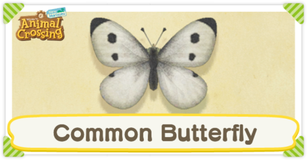
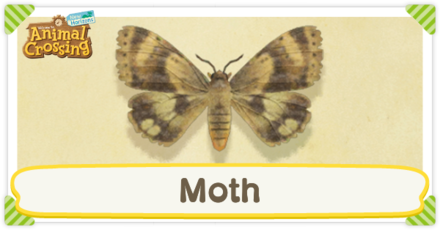
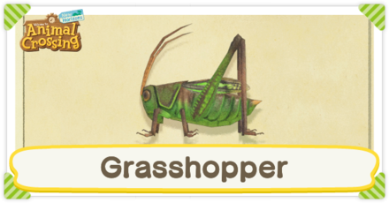
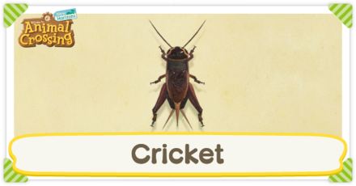

|  |
Common Butterfly |
 |
Yellow Butterfly |
 |
Tiger Butterfly |
 |
Common Bluebottle |
 |
Paper Kite Butterfly |
 |
Great Purple Emperor |
 |
Monarch Butterfly |
 |
Emperor Butterfly |
 |
Agrias Butterfly |
 |
Rajah Brooke's Birdwing |
 |
Queen Alexandra's Birdwing |
|  |
Moth |
 |
Atlas Moth |
 |
Madagascan Sunset Moth |
 |
Long Locust |
 |
Migratory Locust |
 |
Rice Grasshopper |
|  |
Grasshopper |
|  |
Cricket |